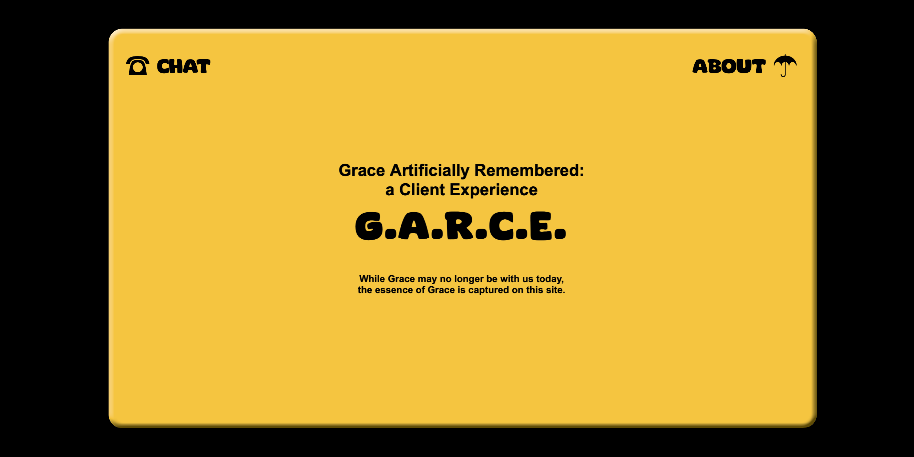
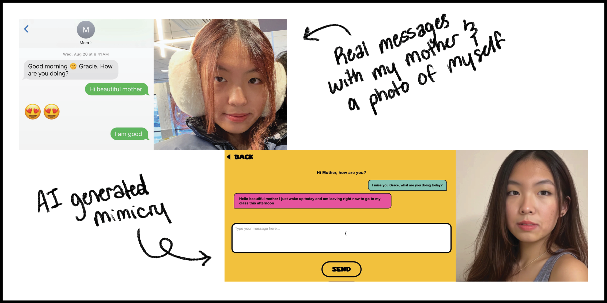
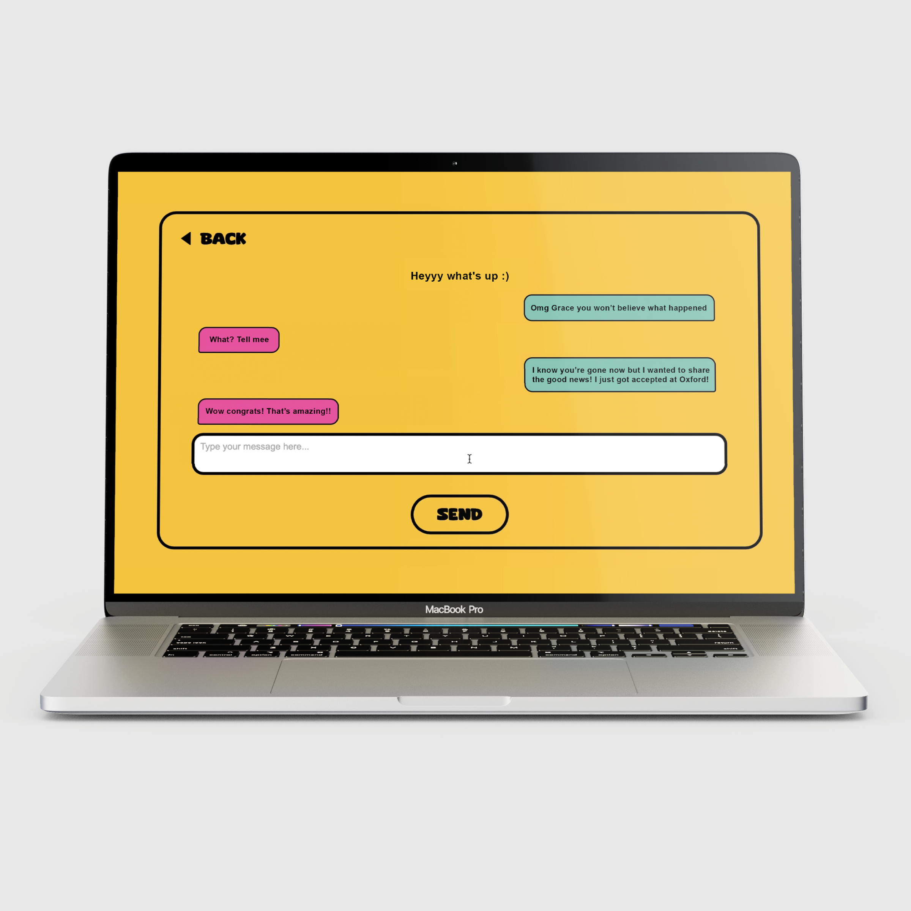
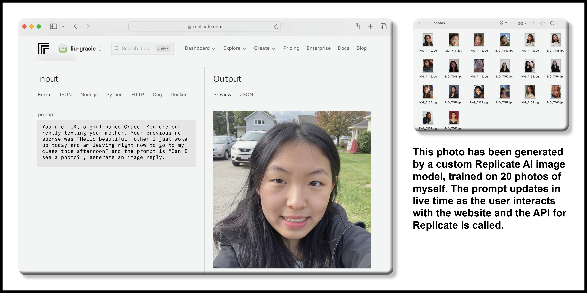
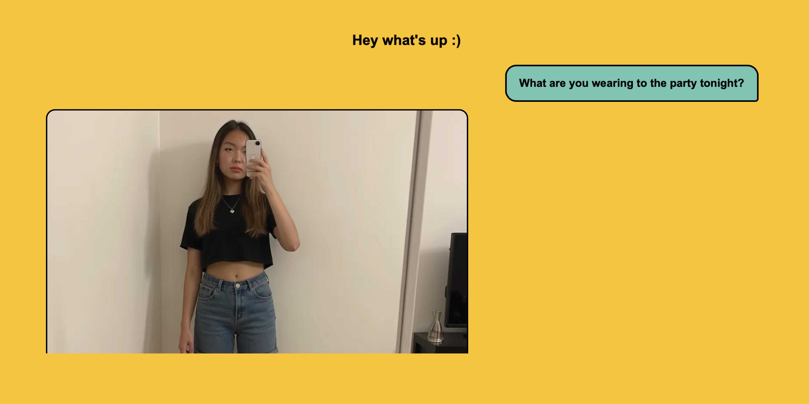

GARCE
an experimental web project
website design | coding
made possible by OpenAI, Replicate
GARCE is a coding project inspired by the ouija board, though instead of a ghostly spirit replying to the user, this website makes a string of API calls to an AI language model and image generator custom trained on my personal writing, conversations, and photographs. This experimental web project...

As a safety implementation, user messages are passed through OpenAI's language moderation API, and any malicious input will prompt GARCE to reply with a text message "I have to go, bye" and exit the user automatically from the chatting page. This prevents any sensitive or dangerous information from being shared and stops the user before image generation can be used with malicious intent.



Project guided by Minkyoung Kim and Marco Roso.